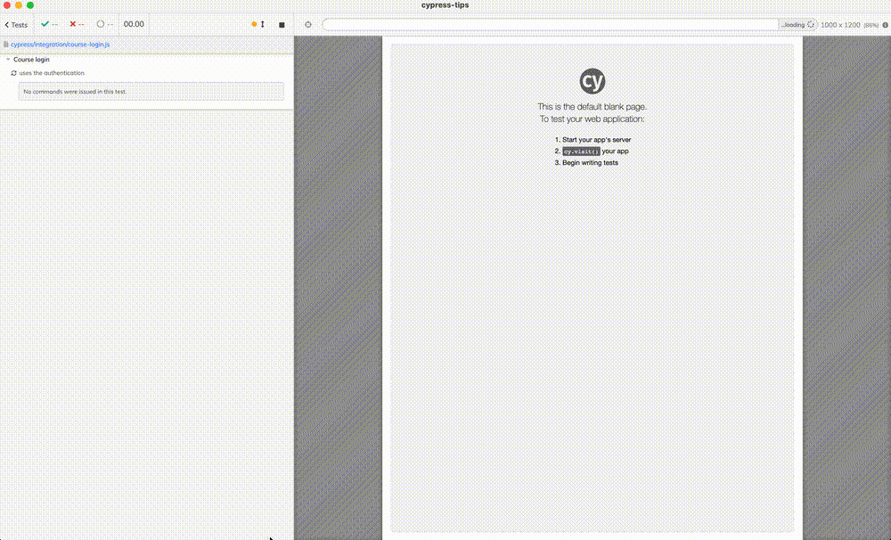
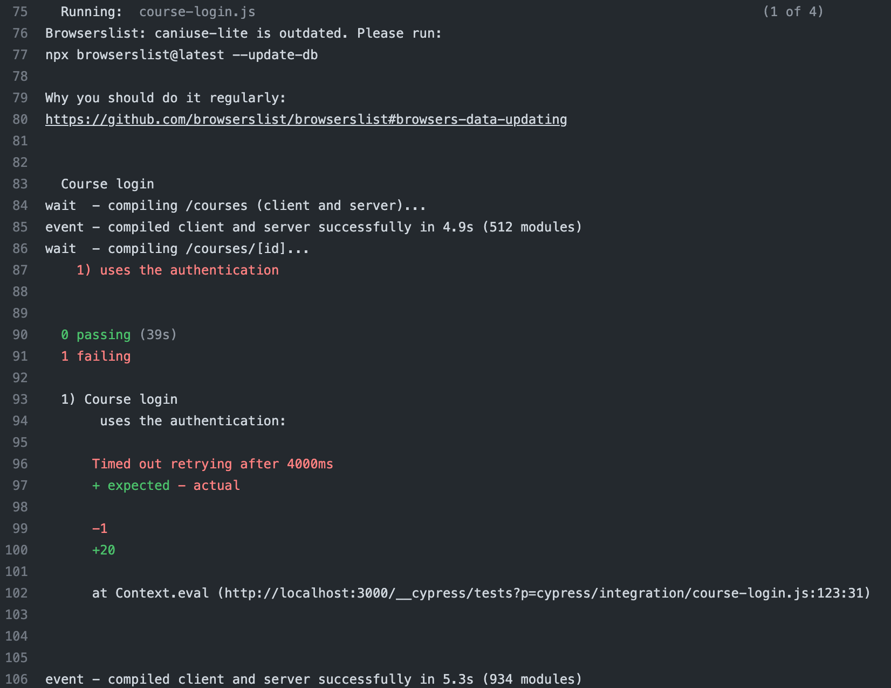
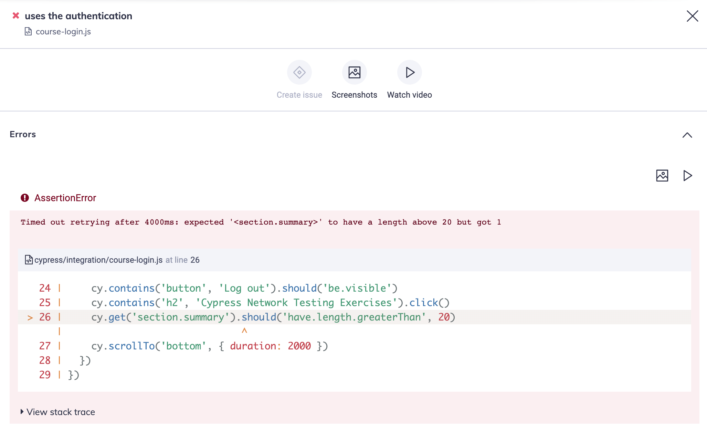
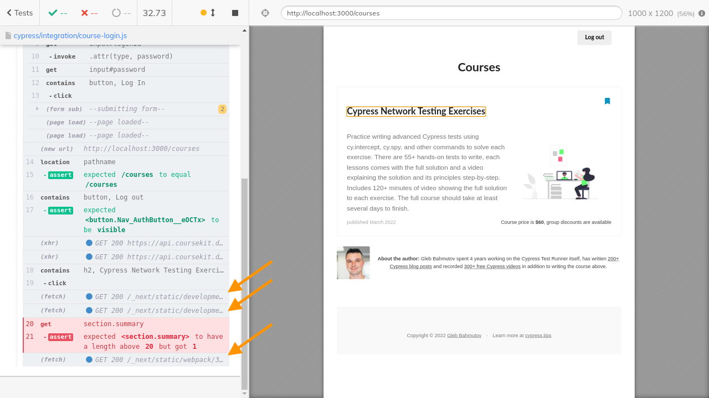
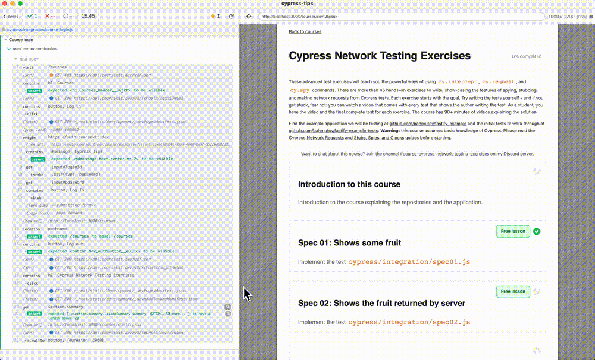
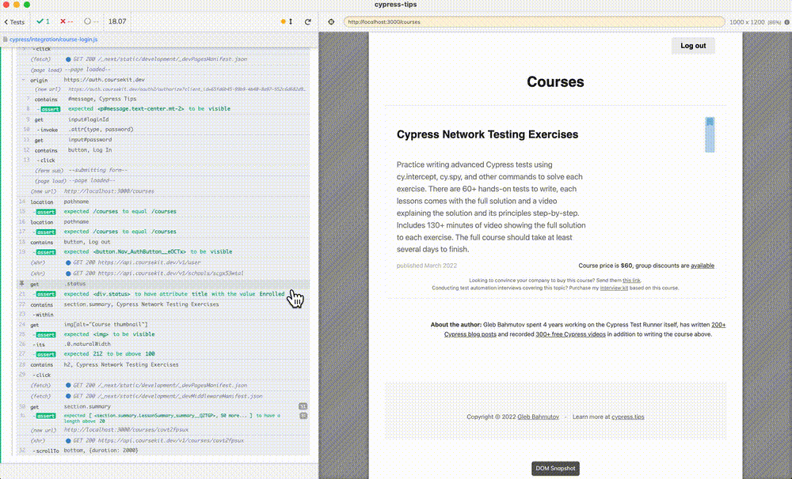
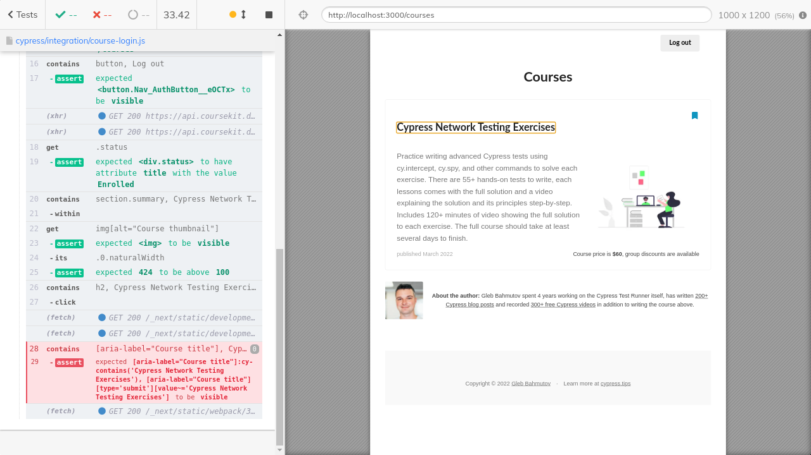
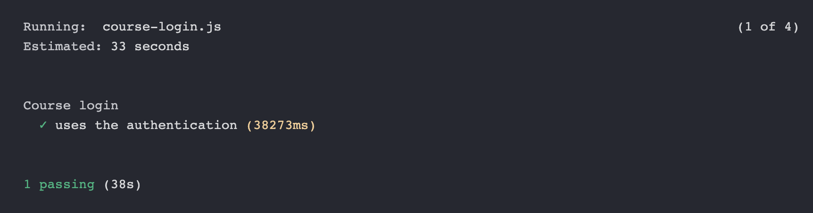

I have my Cypress.tips site with my Cypress courses page. It needs some end-to-end tests. Since Cypress v9.6.0 came out, I had no problem logging in using 3rd party authentication provider, see the video Instant Application Login Via External Domain Using cy.session And cy.origin Commands.
For testing on CI I used my favorite GitHub Actions. Here is the GitHub workflow file:
1 | name: ci |
In my first spec, I wanted to log into the course and scroll the list of lessons. You can find the test code in the pull request #13. I started with one test.
1 | describe('Course login', { viewportHeight: 1200 }, () => { |
The test works locally beautifully. We see the login (I hide the password by changing the type of the email input element to be password), we see the logged in course page, and we can go to the course itself to scroll through the lessons.

Unfortunately the test failed on CI.

Ughh, the error might come from the test command cy.get('section.summary').should('have.length.greaterThan', 20) but we are not sure. I want to see the screenshot, so I set up recording the test results on Cypress Dashboard. The next CI run still failed, but it was recorded this time.

Why does it fail?
Red flags
When running on CI your main concern should be the timing. The CI machine is a small virtual box (unless you pay for custom resource class), nothing compared to your development machine. This underpowered virtual box has to run the web application and the Cypress Test Runner. When browsing Next.js application, each page has to be built, which takes time, then it is loaded by the browser, which also takes time. What it means is that everything is slower than when running locally.
Look at the local test duration in the GIF above - the local test took 15.45 seconds. Look at the CI screenshot - the same test took 35 seconds. And it did not even finish! Can the app execute fast enough to keep up with our clicks and other commands? Look at the Ajax messages around cy.click and the failing command. We want to click and see the course page, but the Ajax messages show the web application is still doing something.

Even working locally, we can see that our cy.click command is executed while the page is still loading. If I hover over it locally, I can see the page still loading images.

1 | cy.contains('h2', 'Cypress Network Testing Exercises').click() |
Hmm, the test runner simply "sees" the "H2" element with expected text and clicks on it. But if the page is still loading and scaffolding, it might not process the click event. How do we prevent this? How do we tell the test to wait for the application to fully load?
Before we jump into event handlers and check if there is one attached, let's simple confirm what we see. Let's confirm the images have loaded before clicking on the course title. Let's confirm other page elements, like the enrolled status element.
1 | cy.location('pathname').should('equal', '/courses') |
Locally we see images have loaded when we get to the cy.contains('h2', courseTitle).click() commands

Ok, looks good locally. On CI? Still fails.

Hmm, let's check more things. We only checked if the course thumbnail image has finished loading. Let's also confirm the author's thumbnail has loaded.
1 | // let the page load and be ready to process the click |
I also added one more check - since the URL changes after the click, before we check the number of sections displayed on the page, we should confirm we got to the new page.
1 | // the url changes to include the course ID |
Finally the CI is green!

So remember - it takes time to fully load the page before it is ready to react to the user events. If you find the test failing because the page is still loading, add more commands and assertions to check those loading elements. The test will give the page an opportunity to fully load, and then the test can proceed.
Worst comes to worst, and nothing on the page looks like it is loading and can be checked using Cypress commands? Nothing the cy.intercept can spy on? Add cy.wait(10000) to sleep for ten seconds while the page is loading.